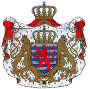
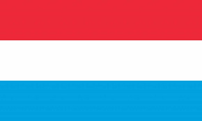

Despite its small size – 2,586 km2 and home to 576,000 inhabitants – the Grand Duchy of Luxembourg is a sovereign state with a rich history. Nestled between France, Belgium and Germany in the heart of Europe, it has been involved in the great European developments.
Victor Hugo wrote about the country:
Vianden, embedded in a splendid landscape, will be visited one day by tourists from the whole of Europe, attracted both by its sinister but magnificent ruin and by its cheerful and happy people.
The turbulent past of the Grand Duchy is a true mirror of European history.
During the Middle Ages, its princes wore the crown of the Holy Roman Empire.
In Early Modern Times, its fortress was a major bone of contention in the battle between the great powers.
Before achieving independence in the 19th century, Luxembourg belonged successively to the Counts and Dukes
of Luxembourg, the Dukes of Burgundy, the Kings of Spain, the Kings of France, the Emperors of Austria and
Kings of the Netherlands.
During the 20th century, this wealthy and dynamic country acted as a catalyst in the unification of Europe.
| Symbol | Details |
|---|---|
| the state coat of arms |  |
| the Luxembourg flag |  |
| the national anthem | Heemecht (Lëtzebuergesch version)Wou d'Uelzecht durech d'Wisen zéit,
O Du do uewen, deem séng Hand
(Text: Michel Lentz / Music: Jean-Antoine Zinnen) |
| The national holiday | The country’s first real national holiday in a patriotic sense was the Groussherzoginsgebuertsdag (the birthday of Grand Duchess Charlotte, who reigned from 1919 to 1964).
Given that this day fell on 23 January, it was transferred in 1962 to a more summery date — 23 June. |